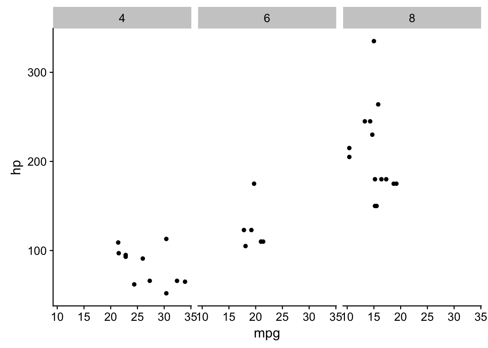

colorbrewer The colorbrewer palettes are packaged with ggplot2. They include palettes for both discrete and continuous data.
viridis
The cowplot package provides a variety of sane defaults for your plots. These are especially useful when making publication-quality figures.
# install.packages('cowplot')
library(cowplot)
#> Loading required package: ggplot2
#>
#> Attaching package: 'cowplot'
#> The following object is masked from 'package:ggplot2':
#>
#> ggsave
ggplot(mtcars, aes(x = mpg, y = hp)) + geom_point() + facet_grid(~cyl)
You should use the ISO 8601 format for dates. Name your files using the YYYY-MM-DD-description.Rmd convention. This way, a directory listing will put them in chronological order using their lexical ordering.
Comment on your analyses
Current me thanks former me